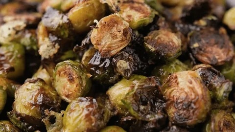

Brussels Sprouts Recipe

Description
Roasting brussels sprouts imparts these contentious vegetables with a delicious flavor and a pleasing bite. Enjoy the crisp exterior and smooth interior!
Ingredients
- 1 lb of brussels sprouts
- 1/2 cup of olive oil
- 1 tsp of salt
- 1 tsp of garlic powder
- Optional: 1/2 tsp of red pepper flakes
Steps
- Preheat the oven to 425ºF.
- Lay a piece of parchment paper onto a baking sheet large enough to contain all of the brussels sprouts.
- Trim the stem from each brussels sprout and cut each sprout in half.
- In a large mixing bowl, toss the brussels sprouts with the olive oil, salt, and garlic powder (as well as the red pepper flakes, if you are using them).
- Spread the coated brussels sprouts onto the baking sheet.
- Roast the sprouts in the oven for 20–30 minutes, or until the sprouts are golden brown and tender in the center, with crisp brown edges.
- Serve and enjoy!